SAN Sound
Manufacturer-Ready Production Files, Packaging & Manual Design, Partner Collab Design (Produced), Collab Concepts (Unproduced), Merch & Apparel Graphics, Social Media Graphics & Video, Email & Marketing Design, Early Website & App Design · 2022–2024

I co-founded SAN Sound and served as product designer across the widest scope I've ever held. Over 2+ years, I turned concepts into manufacturer-ready files for SANWEAR, a line of wireless in-ear monitors, plus packaging, manuals, and early versions of our website and app. I led design on partner collaborations, built out the merch line, and contributed to social and email marketing. Whatever the company needed each week, I showed up for it. The role was demanding and formative, and it taught me how to take an idea all the way to something real, buildable, and shippable.
Context
Startups don't have >narrow< job descriptions. We had a lead artist, a collaborating artist on art and graphics, and a team where everyone <stretched>. My work sat between design and production: taking concepts from the team and turning them into files a factory could actually manufacture from, then handling whatever else needed designing each week.
What I Did
Production translation
I took headphone concepts and produced the manufacturer-ready design files: scaled OPGs down to millimeter tolerances, Pantone specifications, material and finish callouts, dieline specs. I communicated with production to get them implemented correctly, across revision cycles and time zones.
Packaging and manuals
The SANWEAR TT-01, SANWEAR Factions, SANWEAR collaborations, SANWEAR special editions, and SANWEAR-GT boxes, inside and out: guiding stickers, ear tip and sport hook trays, collab sleeves. Plus the quick start guides through multiple versions, including the regulatory pages covering FCC IDs, CE compliance, battery and hearing safety, and environmental disposal.
Partner collaborations
I authored design proposal decks for partner SANWEAR editions, presenting multiple colorway directions per partner and carrying the chosen direction through to production files. Produced editions included TV Chosun and Supra. I also designed concept proposals for several other partners that did not go to production.
Merch and apparel
GT hats, t-shirts, polos, workwear, and half-zips: mockups and production ready files with labels.
Marketing and social
Design and layout for the SANCTUARY newsletter in Klaviyo. Social graphics and short-form videos for informational usage about SANWEAR.
What I Learned
So much. This experience defined me in many ways. It shaped my professionalism, communication style, collaboration, navigating interpersonal relationships at work. I was very personally invested in the growth and success of this company. I also learned by force what the definition of work-life balance is. Despite the ups and downs, I'm very grateful to the team and company for chiseling my skill and work ethic, encouraging my curiosity and creativity in our problem solving.
Additional lessons included: How to use a design to a spec sheet. How significantly millimeters matter. What the end letter of Pantone codes mean. How to design backwards from what a factory can physically do and what our budget can handle.
Finally, I also learned what it means to be the generalist on a small team. There's no version of this job where you only do the part you're best at. You become the person who figures out how to help everyone else get what they need.
In the End
By the time I left in 2024, SANWEAR was in the hands of a community across 37 countries. The SANWEAR-GT launched with the packaging, manuals, and production files I built, and the Supra and TV Chosun partner editions were going into production.
Final Physical Products
Photos from the SAN X account: SANWEAR TEST TYPE (TT) 00, SANWEAR Special Edition colorways (3), SANWEAR Faction colorways (5), and the final SANWEAR-GT on top of SANWEAR TT-01 boxes.
Artifacts
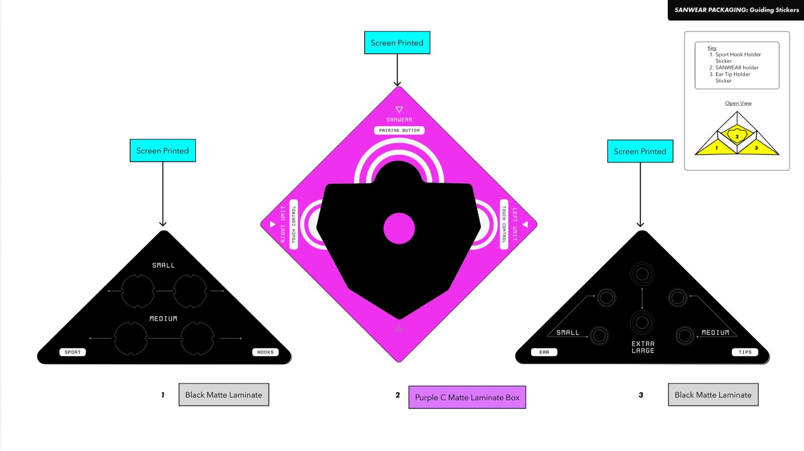
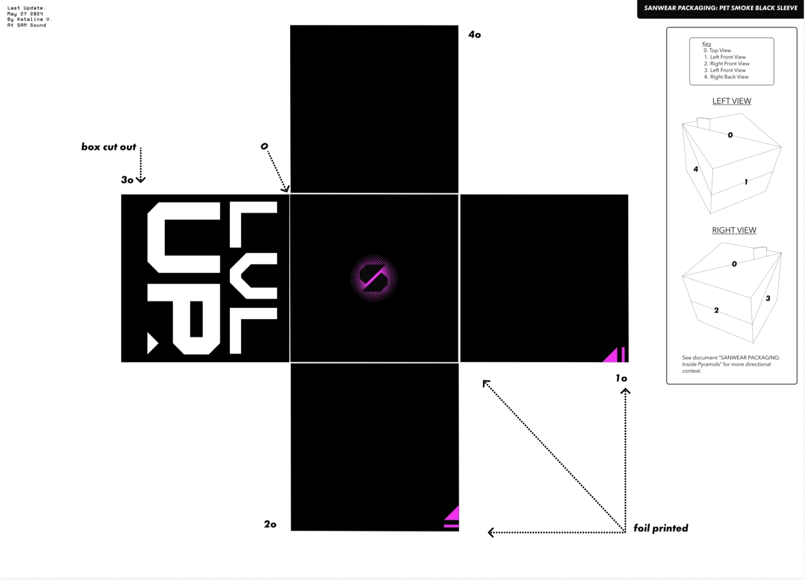
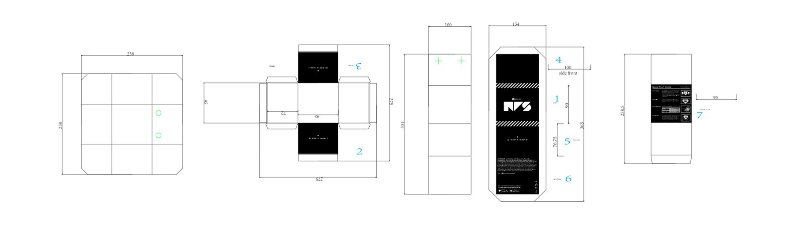
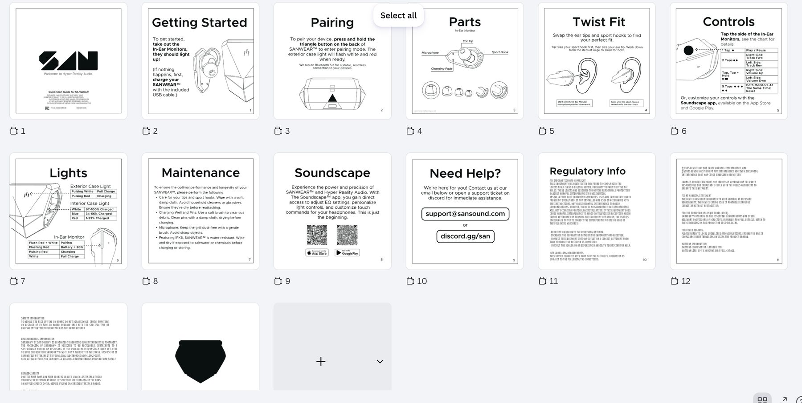
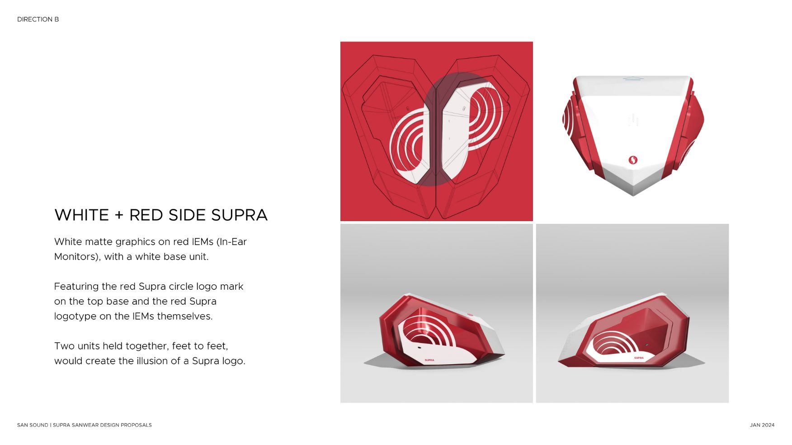
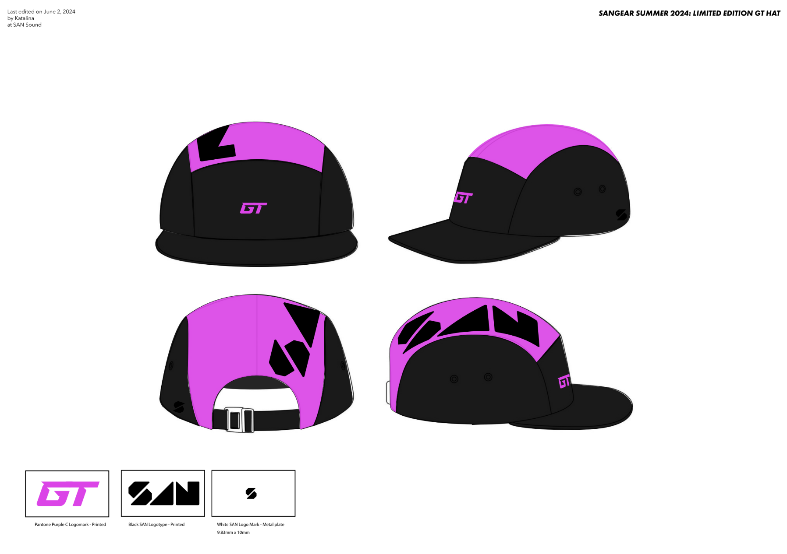
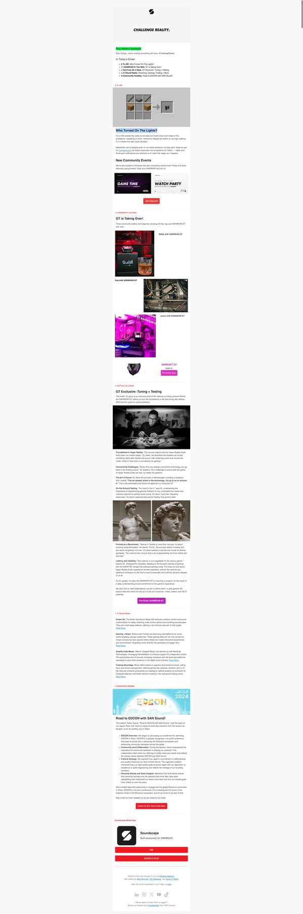
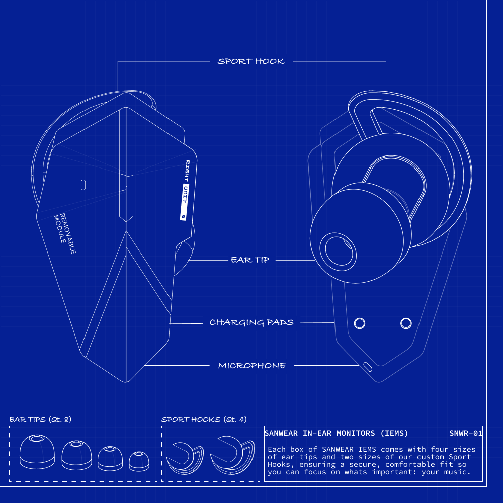
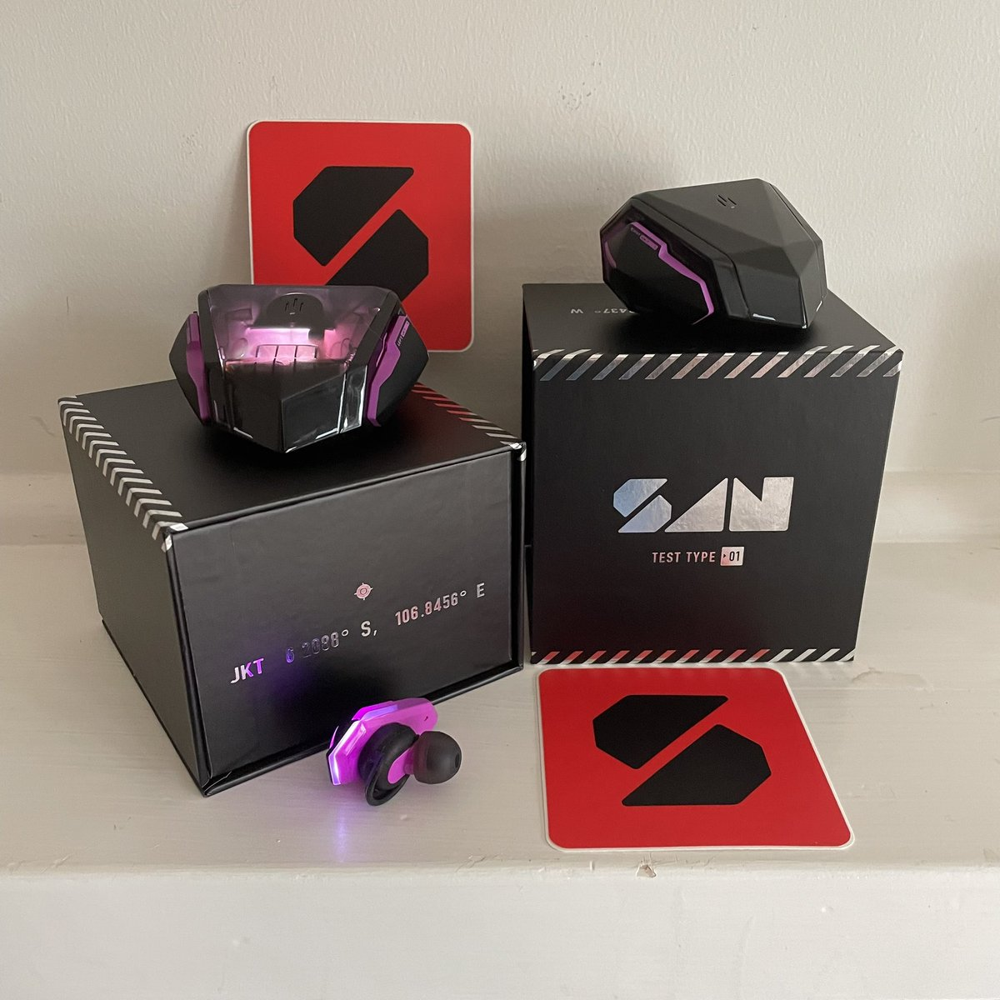
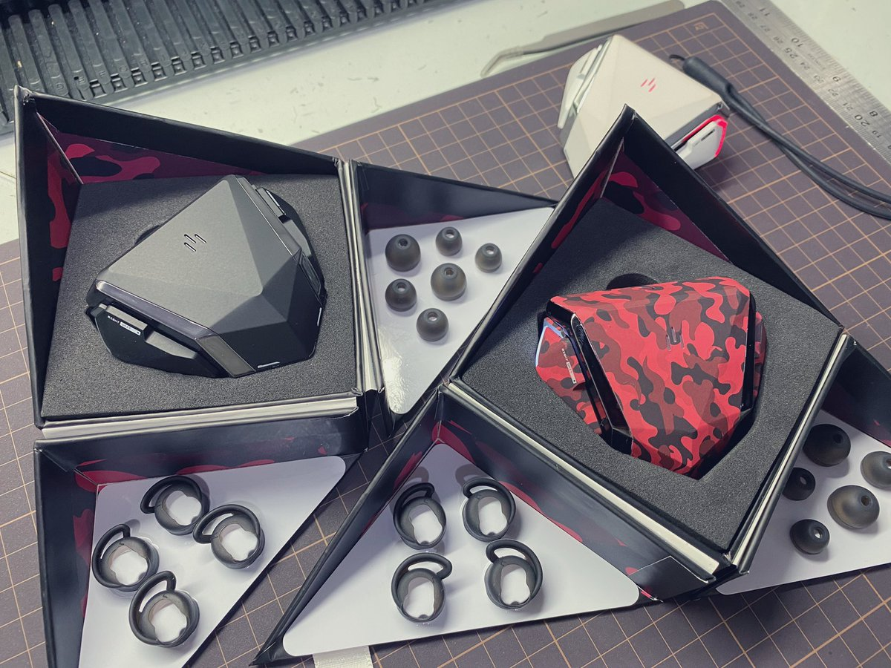
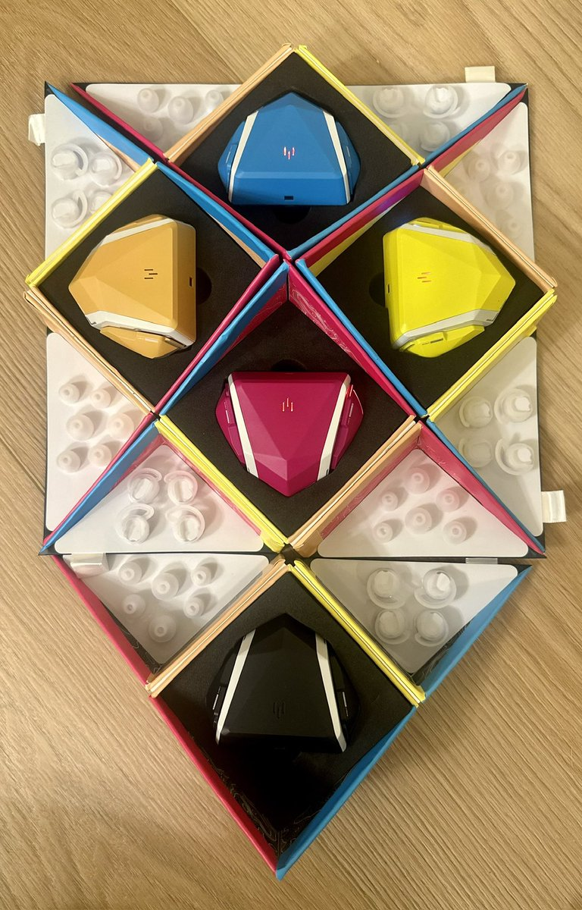
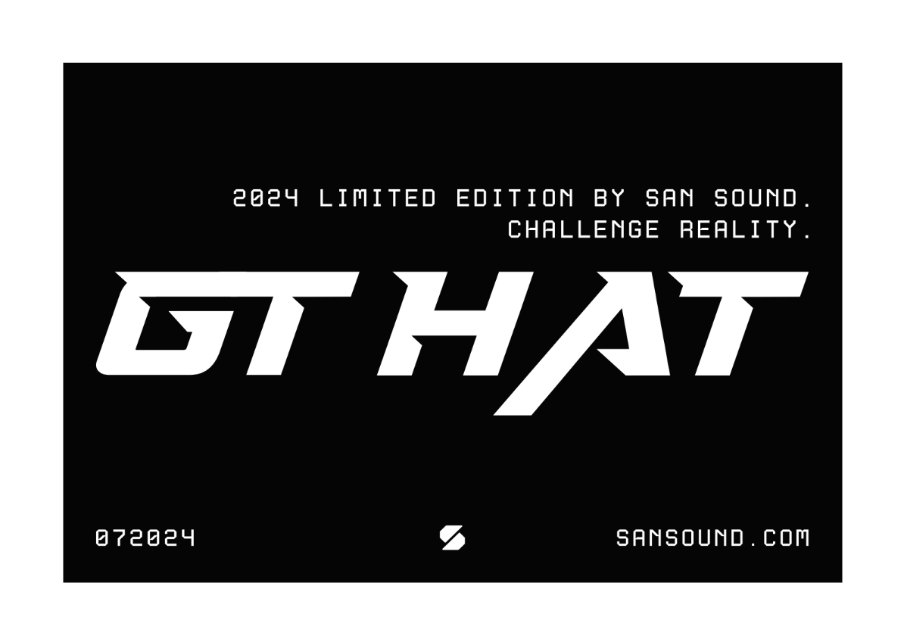
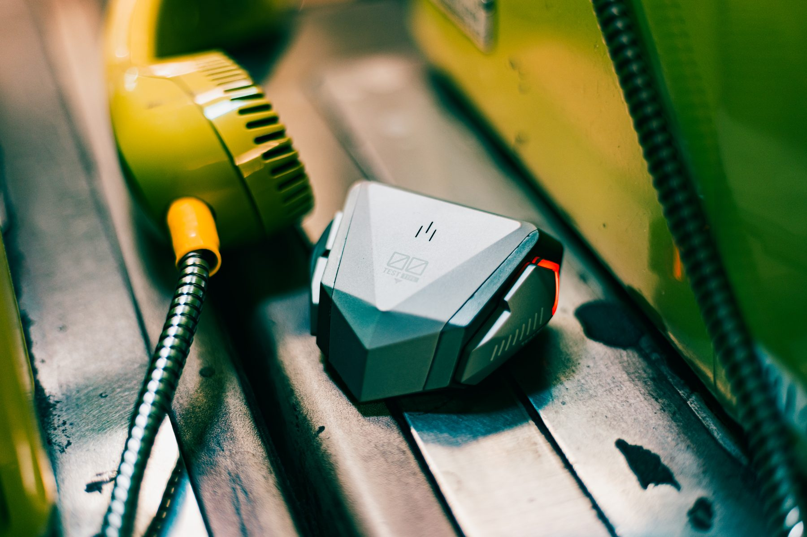
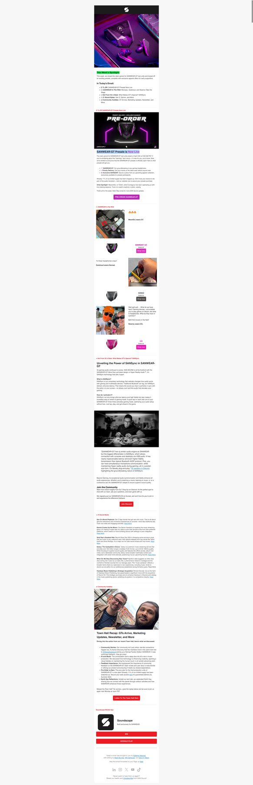

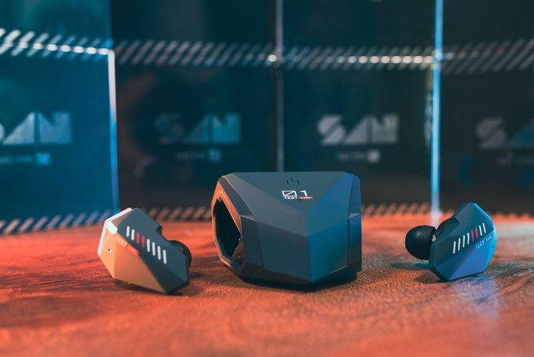